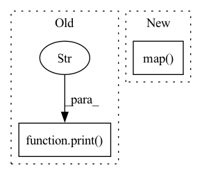

Pattern ID :8135
Before Change
if task is None:
print("[1] Map PTB-XL to MIMIC-III")
mapped_ptbxl = map_to_mimiciii(args.ptbxl_dir, args.mimic_dir)
print("[2] Encode mapped PTB-XL database" )
encoded_ptbxl = encode_ptbxl(args.ptbxl_dir, ptbxl_database=mapped_ptbxl)
print("[3] Instantiate templates based on the encoded PTB-XL")
sampled_data, grounding_data = instantiate_template(
ptbxl_dir=args.ptbxl_dir,After Change
ptbxl_database = pd.read_csv(os.path.join(args.ptbxl_dir, "ptbxl_database.csv"))
ptbxl_database = ptbxl_database[ptbxl_database["validated_by_human"]]
ptbxl_database["report"] = (
ptbxl_database["report"].map( lambda x: x.replace("ekg", "ecg").replace(".", ""))
)
print("[2] Encode PTB-XL database")
encoded_ptbxl = encode_ptbxl(args.ptbxl_dir, ptbxl_database=ptbxl_database)
print("[3] Instantiate templates based on the encoded PTB-XL")
In pattern: SUPERPATTERN
Frequency: 3
Non-data size: 2
Instances Fragment ID: 28757568
Project Name: jwoo5/fairseq-signals
Commit Name: 1865c0c83ba4ae18aa46838313c7350b8b440f60
Time: 2023-02-25
Author: ojw0123@korea.ac.kr
File Name: fairseq_signals/data/ecg_text/preprocess/ptbxl_qa_pipeline.py
M Class Name: AnonimousClass
N Class Name: AnonimousClass
M Method Name: main(1)
N Method Name: main(1)
M Parent Class:
N Parent Class:
M File Name: fairseq_signals/data/ecg_text/preprocess/ptbxl_qa_pipeline.py
N File Name: fairseq_signals/data/ecg_text/preprocess/ptbxl_qa_pipeline.py
M Start Line: 88
M End Line: 122
N Start Line: 108
N End Line: 161
Before Change
labels.append(0)
scores.append(cosine_similarity(anchor_embedding, neg_embedding))
triplets_evaluated += 1
print("triplets evaluated:" , triplets_evaluated, "/", num_eval_triplets)
return (labels, scores)
def compute_eer(labels, scores):After Change
fetcher = TripletScoreFetcher(spk_to_utts, encoder, num_eval_triplets)
with multiprocessing.Pool(myconfig.NUM_PROCESSES) as pool:
while num_eval_triplets > len(labels) // 2:
label_score_pairs = pool.map( fetcher, range(
num_eval_triplets - len(labels) // 2))
for triplet_labels, triplet_scores in label_score_pairs:
labels += triplet_labels
scores += triplet_scores
print("Evaluated", len(labels) // 2, "triplets in total") Fragment ID: 28757566
Project Name: wq2012/speakerrecognitionfromscratch
Commit Name: a93d8ddbd387c75b3eb58399b724b95f61e51a24
Time: 2022-05-10
Author: quanw@google.com
File Name: evaluation.py
M Class Name: AnonimousClass
N Class Name: AnonimousClass
M Method Name: compute_scores(2)
N Method Name: compute_scores(2)
M Parent Class:
N Parent Class:
M File Name: evaluation.py
N File Name: evaluation.py
M Start Line: 38
M End Line: 58
N Start Line: 67
N End Line: 78
Before Change
batch_size=100,
truncation=None,
num_workers=20)):
print(f"idx: {idx}, shape: {torch.tensor(out).shape}" )
// this outputs the same as features
// I know how to parallelize this via dataset.map
encoded_input = tokenizer(sample_text, return_tensors="pt")After Change
output = model(**encoded_input)
return {"embedding" : output["last_hidden_state"]}
dataset.map( featurize, batched=True, batch_size=1000)
print("done")
if __name__ == "__main__": Fragment ID: 28757567
Project Name: microsoft/archai
Commit Name: ea9bf6cd47b3069181d7b1949e6ad86afc4b56bf
Time: 2022-12-16
Author: dedey@microsoft.com
File Name: scripts/misc/hf_featurize.py
M Class Name: AnonimousClass
N Class Name: AnonimousClass
M Method Name: main(0)
N Method Name: main(0)
M Parent Class:
N Parent Class:
M File Name: scripts/misc/hf_featurize.py
N File Name: scripts/misc/hf_featurize.py
M Start Line: 22
M End Line: 37
N Start Line: 25
N End Line: 43